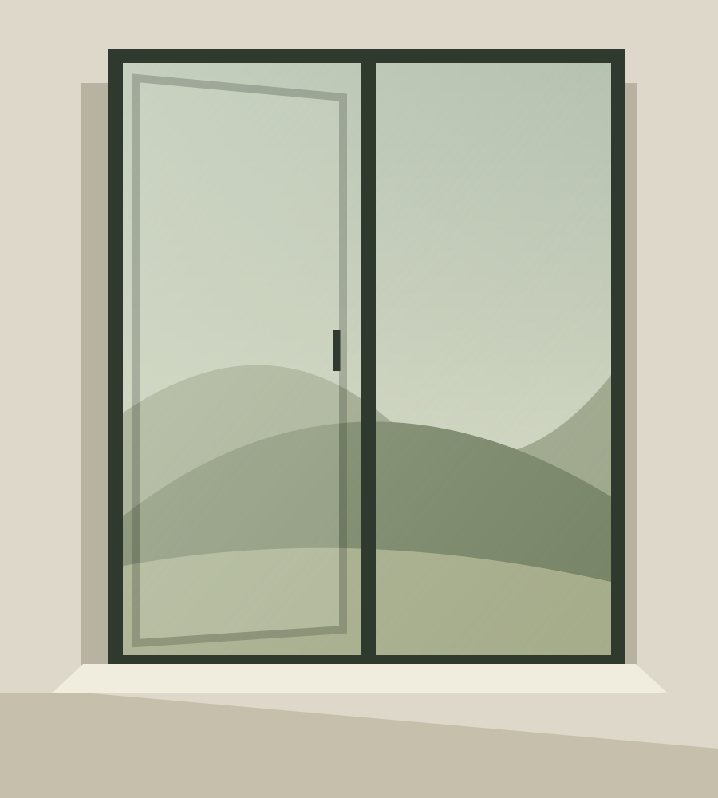
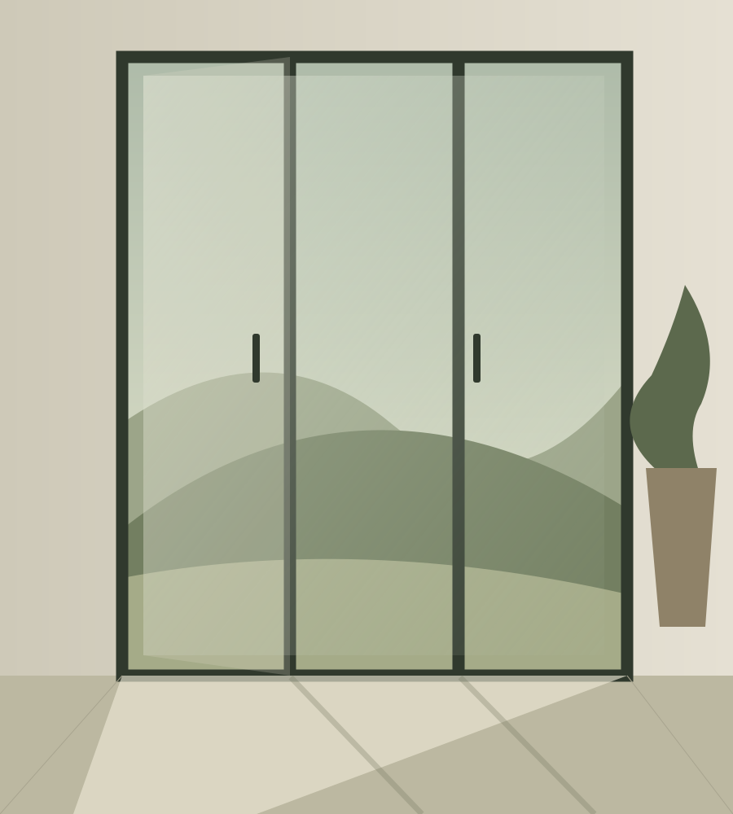
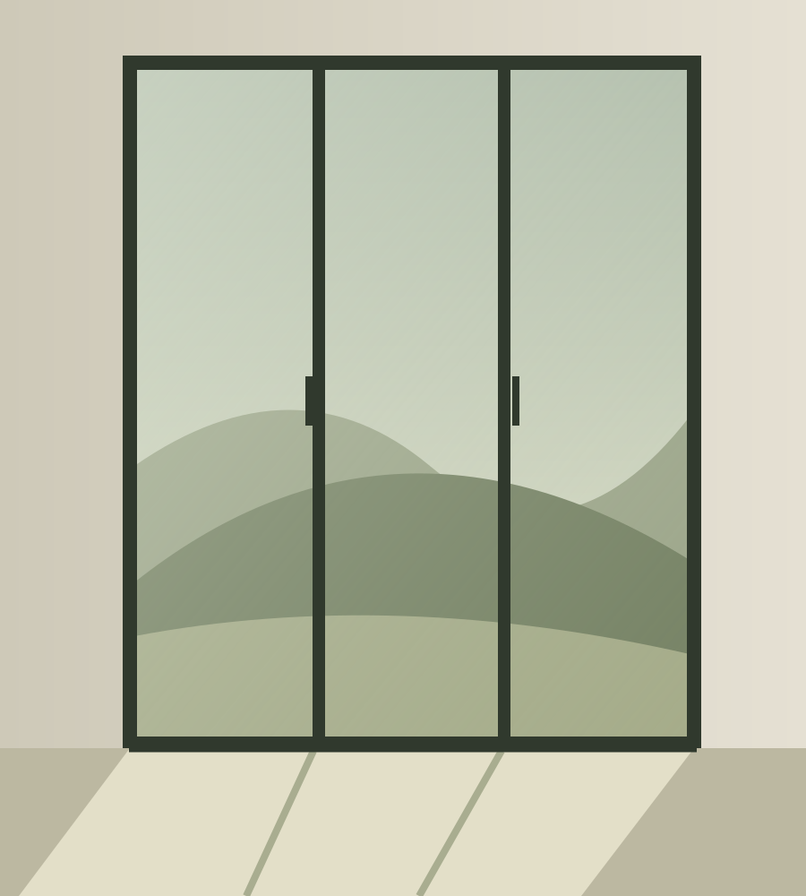
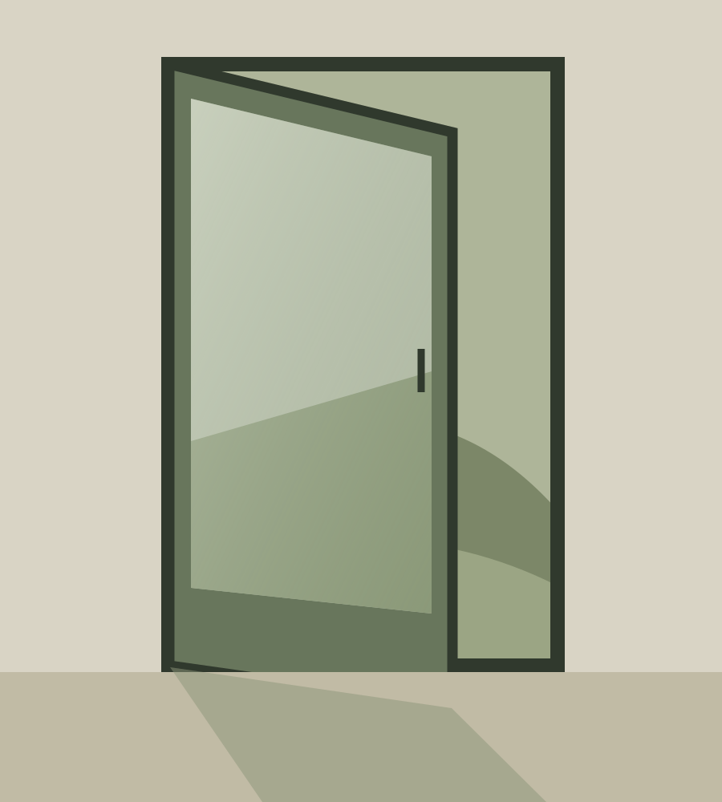

Schematic conceptTilt & turnA window composition that explores a framed view and the rhythm of an opening.Explore the studyArchitectural design concept
Space for
what’s next.
A study in quiet frames, warm materials and the way an opening changes a room.
Explore the opening studiesAn unbranded website direction for review. The illustrations express an aesthetic, not an available product range.

A quieter architecture.
Warmth. Balance. Restraint.
Warmth. Balance. Restraint.
Explore the visual language through three opening types and a simple, tactile palette.
What this review covers01 / Opening studies
Different ways
to frame a view.
Three familiar opening types used to explore layout, proportion and visual hierarchy. These are design studies, not product listings.
3 opening studies

Schematic conceptSlidingA broad horizontal composition with overlapping lines and a connection between spaces.Explore the study
Schematic conceptHingedA single opening, with an emphasis on the frame, threshold and movement of a leaf.Explore the studyAll illustrations are original schematic compositions. They do not specify dimensions, materials, engineering details or available configurations.
02 / Design perspective
A considered
point of view.
The visual direction pairs warm paper tones with deep olive, generous space and a quiet editorial rhythm.
01
Let the opening lead.
Strong proportions and simple compositions give each study room to breathe.
02
Keep the material palette calm.
Soft neutrals and restrained contrast create a cohesive visual language.
03
Make the details clear.
Readable type, straightforward navigation and visible context support the review.
03 / Review the direction
What feels
right for the space?
Use these prompts to assess the design. A blank checklist is available to keep with your own notes.
Download the checklistStatic review · No inquiry form
This site does not take orders or receive project details.
Look at the overall mood.
Consider the warmth, contrast and balance of illustration and typography.
Explore the opening studies.
Review how clearly the three compositions communicate their visual differences.
Try the smaller screen.
Check the reading order, navigation and spacing on a phone as well as a desktop.